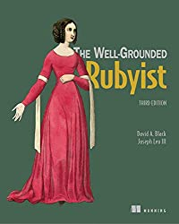

Seven Best Books For Programming
Hi, guys welcome to my first website. In this website I will be telling you about best coding books for beginners. In these books you will read about the basic fundamentals of programming. So before starting programming you must read these coding books. I have selected 7 different programming languages and for each language I have recommended 1 book at beginner level. So let’s get started with 7 Best Coding Books For Beginners in 2021.
Here is the list of books
1.Let Us C

If you are to begin your programming career and you are going to start with c, then choosing c, as beginner could somehow be a better option, but when it comes to learn the skill from the book I will suggest you a book like "let us C" by Yashavant Kanetkar.
The new edition of Let Us C by Yashavant Kanetkar gives a detailed explanation of C programming language concepts. The book includes well thought-out and fully working programming examples and exercises that would help you practice the skills learned in the chapter.
2.Java The complete Reference
The topics in this book covers from a beginner level of starting to learn java to going advanced with GUI, Website Backend like Servlet, developing softwares, APIs and many other topics which are more than enough for a novice to land a job in Java profile.
If you are at the intermediate or expert level in Java and want a “back to the basics” approach, then this book is the way to go as it’s a well-structured and complete source on Java programming with examples from the real world for all topics. Java: The Complete Reference covers the whole of Java, including fundamental topics like syntax, keywords, and basic programming principles. And also the complex topics like the Java API library, the concurrency utilities, Swing, JavaBeans, servlets, etc. An introduction to JShell is also provided, which is Java’s interactive programming tool. Buy Java: The Complete Reference Book
3.C++ Programming language
C++ Primer by Stanley B. Lippman, Josée Lajoie, and Barbara E. Moo is considered one of the best books to learn C++ programming and is ideal for programmers of all skill levels. This nearly 1,000-page long book has everything you need to become an expert C++ programmer, right from scratch. The book, restructured for quicker and active learning, also provides ample reader examples to readers to put their skills to test.
This is the best C++ books for beginners to start your journey. Thousands around the globe prefer this book. It considered a valuable resource for beginners as well as experienced programmers. The book is one of the best book for c++ programming.
4.Head First Python

Head First Python is a complete learning experience for Python that helps you to quickly grasp Python’s fundamentals, working with the built-in data structures and functions.
Head-First Python starts the Python journey with the In-Built Data Structures and functions and moves on to Python web apps, database management, exception handling, data wrangling, etc. Interesting topics such as comprehensions, context managers, decorators, and generators are all available for you to learn. Head-First Python is basically a multi-sensory learning experience that will help you in becoming a bonafide Python programmer.
5.JavaScript: The Good Parts
This JavaScript book is written by Douglas Crockford. It is ideal learning material for programmers. The book is also useful for programmers who are working with JavaScript and now want to become an advance programmer.
Inside this book, you will find topics related to JavaScript language and tasks common to a wide range of application domains. It offers many code samples.
6.Ruby:The Well-Grounded Rubyist
Ruby is another scripting language that’s commonly used for web development. In particular, it’s used as the basis for the popular Ruby on Rails web application framework.
The Well-Grounded Rubyist by David A. Black and Joseph Leo III begins with your first Ruby program and takes you to sophisticated topics like reflection, threading, and recursion.
The book is written in an easy-to-read and casual style. It includes high-value exercises to practice your skills along the way. The book is divided into three parts and sixteen chapters. Part 1 covers Ruby foundations, part 2 talks about built-in classes and modules, and part 3 covers Ruby dynamics.
7.Scala
This is by far the best book to learn Scala, particularly for Java developers. Having a designer of Scala programming language, Martin Odersky, as the co-author of the book, really helps in terms of providing more depth on concepts.
You can use this book as a reference because it provides comprehensive coverage of all Scala concepts and features. It also discusses similarities and differences between Scala and Java, which makes this book more valuable for experienced Java programmers.
My Profile